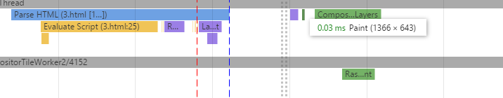

css3动画很早就开始用了，实践的机会也不多，容易忽视很多细节。前几天就发现一个问题，关于css3里的transition属性的问题。
用法简单的就是，比如1
transition：height 1s linear
定义和用法用法是十分简单的。只要transition的属性值里写入的属性发生变化，transition就能捕获到这个变化，然后让这个变化逐渐的完成，而不是立即完成。而关键点就是这个变化。
来看一段代码，简化版，只保留了必要的东西
1 | <style> |
通过这样的js修改元素的属性，这样的变化能被transition捕获到吗？
答案是不能的。打开页面元素高度直接变为300px而不是从200渐变到300。
而另外一种情况，这个渐变却可以发生。如下
1 | <style> |
在原来的script标签之前加上一个script标签并且引入一个jquery，这个渐变神奇的又产生了。
经过网上一番查资料和思考，感觉这个应该和浏览器的绘制过程有关系。摸索过程中发现chrome的Timeline工具，真的是神器啊，Timeline可以记录整个文档从加载开始到完成的一系列动作，包括页面的绘制等等。
在第一种情况之下，timeline是这样的，只有一次Paint。

第二种情况，timeline上出现了两次绘制，第一次出现在解析完第一个script标签之前的文档元素后，第二次出现在jquery引入完成后，文档完全解析完之后。也就是说第一次绘制，box高度被绘制为200px，而第二次绘制变成了300px，这时候会更新渲染树，触使浏览器重新绘制dom，这时候就产生了变化，所以出现了渐变的过程。
我觉得这也是一个很合理的过程，在另外一些情况，比如把jquery的script放在head内，那么无论如何这个dom的渲染只有一次，因此不会产生渐变。而这个script放在dom之下的时候，dom的绘制，渲染可以立刻进行，也可以不马上进行，因为除了style内有对元素样式的改变，通过js也是可以将样式改变的，这时候如果执行完所有的js再进行绘制那么，浏览器的效率肯定是更高的。而上面说到的第二张情况，因为script标签是堵塞的，这时候提前进行绘制才是合理的。
如果把引入jquery改为引入一个空的js文件，那么这个渐变时有时无，我觉得也是合理的，毕竟这个js的引入所花费的时间时长时短，所以我猜测应该有一个标准来衡量这个时间吧，但是并没有看到相关资料。
以上只是根据timeline展示进行的推测，没有找到太多的相关文字资料。
另外，从timeline里还可以看出很多东西。
- 对html文档的解析，基本是分段来的，大概是以有引入外部js的script标签为节点。
- 一次绘制基本涉及4个步骤（Recalculate style 、 Layout 、 Updata Layer Tree 、 Paint 、 Composite Layer）
……………这里简单的讲讲，具体等看更多资料后来完善
在实验的过程中，发现了一细节，这里记录一下。
1.DOMContentLoaded 事件的使用。通过docuemnt.addEventListener 来添加。这个事件触发是在页面的所有js文件运行或者加载完成后才会被触发。 但是不包括外部的css和图片的引入完成。
其实jquery的$(document).ready(function(){});就是对这个事件的封装，做了一些兼容。相对于onload事件，DOMContentLoaded更加宽容一些，允许页面结构加载完成，不带上样式，但是不允许js的缺失，也就是交互的缺失。
但是其实浏览器并不是完全这样做的，如果在script前引入样式，会等待样式引入完成才引入js